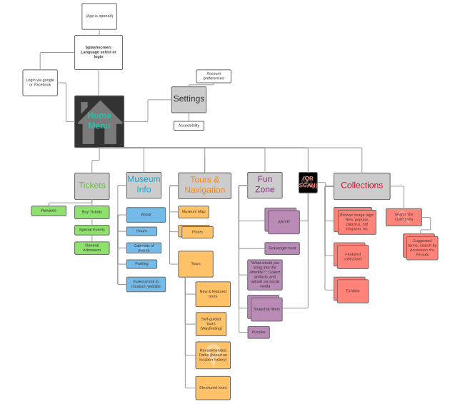

Museo Egizio
April 2018 - June 2018
Role
- UX Researcher
- UX Designer
Skills
- Research
- Wireframing
- Prototyping
Tools
- Google Suite
- Adobe Illustrator
Deliverables
- Prototype
- Wireframes
- Recommendations
- Report
Overview
Museo Egizio is an Egyptian museum located in Italy and is partners with UCLA’s Cotsen Institute of Archeology. They are currently experimenting with mobile applications to enhance the modern museum viewing experience.
My team met with stakeholders and were asked to propose a versatile application that would engage users in the museum’s collections through social experiences. Our goals as researcher and designers were to:
・Educate the public about the ancient Egyptian culture.
・Support scholarly research through archeological missions, school field trips, and visiting researchers.
・Facilitate engagement between the public and the museum.
Research
In order to identify what components the application would contain, we researched the needs and wants of the museum and the museum visitors through a series of interviews and surveys.
By facilitating discussions with the museum stakeholders, we were able to identify the goals and expectations they had for the mobile application. Similarly, through user interviews and surveys we were able to understand the museum visitor’s visitation experience such as their information needs and their desired content and features.
We also conducted a comparative review of other museum mobile applications to identify components that are successful and those that are unsuccessful. Analyzing other museum mobile apps allowed us to make a comprehensive and compelling mobile experience for Museo Egizio visitors. Our findings demonstrated that in general, the best apps fostered a strong relationship between using the mobile app and visiting the museum in person. When designing the app it was important that we found a balance between incorporating too little features that the app would have no longer-term value and too many features that visitors did not feel the need to visit the museum in person.
I was responsible for conducting both user and stakeholder interviews. I was also responsible for getting users to fill out our online survey.
Personas
Once enough data in our research was collected, we created four user personas to help identify the range of experiences and obstacles that museum visitors have, as supported by our data. We would refer back to our personas when thinking of the components of the mobile application because it would help us keep in mind the needs and wants of the Museo Egizio visitors.
Design
By analyzing our user research, we finalized 6 main components the mobile app needed to have:
・Tickets
・Tours and Navigation
・Fun Zone
・Museum Info
・Collections
・Settings
Once we identified these components, we were able to better visualize the structure of the mobile application. We began to brainstorm the information architecture before designing the low-fidelity wireframes.
 Upon brainstorming the information architecture, we identified 3 main design features to ensure success of the mobile application we were recommending.
1) Practical - has a flexible structure and functions effectively.
2) Intuitive - is simple to use and contains universal symbols/icons.
3) Engaging - is interactive with the museum’s collections, revisited continuously, and maintains a positive experience for the user.
I was responsible for designing half of the low-fidelity wireframes and prototype.
Deliverables
We presented our client with the user research results, personas, low-fidelity wireframes, and an Adobe XD prototype of our mobile app recommendation.